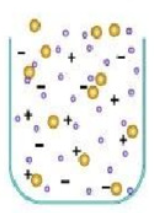

Plasma is an ionized gas consisting of free electrons and positive and negative ions. It is often referred to as the fourth state of matter.

Figure – The structure of plasma (electrons and ions)
Plasma research is important primarily in energy and astrophysics. Plasma is used to create thermonuclear fusion, a reaction occurring in the Sun:
One gram of a deuterium–tritium mixture can give 3.4 × 1011 J of energy. For comparison, 1 gram of oil gives 4.2 × 104 J.
Stars, the solar wind and the interstellar medium are filled with plasma. Therefore, astrophysics studies plasma as well.
Plasma can be obtained from almost any material if enough energy is transferred. Gases are usually used: argon, neon, xenon, hydrogen, helium, nitrogen and air.
The gas is heated. The kinetic energy of atoms increases, electrons leave atoms and free electrons and ions appear.
A strong electric current passes through gas. Electrons accelerate and collide with atoms, causing ionization.
A powerful laser transfers energy to matter. Electrons become free and plasma is created.
An electromagnetic field accelerates electrons. Collisions create ions and plasma.